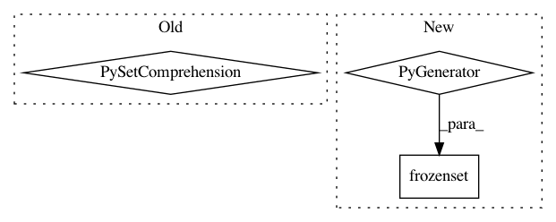

cd83fed56a184063215f932ef768f8834328654c,networkml/featurizers/funcs/host.py,HostBase,_numericintset,#HostBase#Any#,56
Before Change
def _numericintset(self, nums):
if nums is not None:
return {int(x) for x in nums if x is not None and not np.isnan(x)}
return set()
def _get_ip(self, row, cols):
ipv = row["ip.version"]
After Change
def _numericintset(self, nums):
if nums is not None:
return frozenset(int(x) for x in nums if x is not None and not np.isnan(x))
return frozenset()
def _get_ip(self, row, cols):
ipv = row["ip.version"]
In pattern: SUPERPATTERN
Frequency: 3
Non-data size: 3
Instances
Project Name: CyberReboot/NetworkML
Commit Name: cd83fed56a184063215f932ef768f8834328654c
Time: 2020-04-01
Author: josh@vandervecken.com
File Name: networkml/featurizers/funcs/host.py
Class Name: HostBase
Method Name: _numericintset
Project Name: CyberReboot/NetworkML
Commit Name: cd83fed56a184063215f932ef768f8834328654c
Time: 2020-04-01
Author: josh@vandervecken.com
File Name: networkml/featurizers/funcs/host.py
Class Name: HostBase
Method Name: _tshark_all
Project Name: pantsbuild/pants
Commit Name: a3cb9c08f86c193f76336284580ff302981388d7
Time: 2019-04-13
Author: john.sirois@gmail.com
File Name: build-support/bin/check_pants_pex_abi.py
Class Name:
Method Name: main